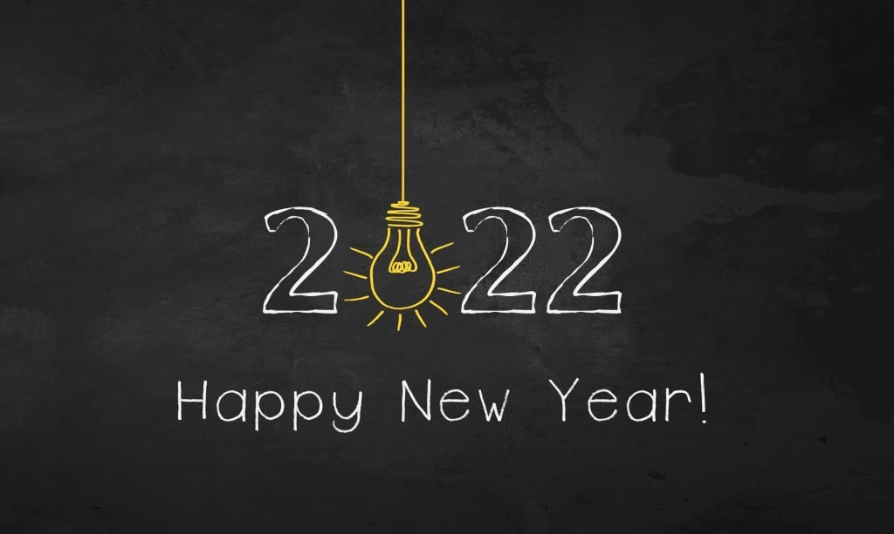

Mihir
Gupta
|
Blog
Hello World!
January 1st, 2022
Happy New Year 2022!
Welcome to my first blog post. My name is Mihir Gupta and I'm a first year
Computer Engineering student in stream 4 at the University of Waterloo.
My goal for this blog is to write about my experiences as a UWaterloo student
and new technologies that I have learnt in my future ECE courses or in my
spare time. Some things I plan to learn during my first coop term and over the
Winter Break are Android Development, JavaScript and the React Framework, and
Tensorflow.
I would also like to take the time to pursue my other hobbies, such as photography,
and hiking. I also want to take some time to relax and take care of my mental health
after a stressful online 1A term.
To end off this blog post, I would like to share a joke that made me smile.
A group of engineering professors were invited to fly in a plane. Right after they
were comforable seated, they were informed the plane was built by there students.
All but one got off their seats and headed frantically to the exits in maniacal
panic. The one lone professor that stayed sitting calmly in his seat was asked
"Why did you stay put?". He replied "I have plenty of confidence in my students.
Knowing them, I can assure you this plane will never event start."